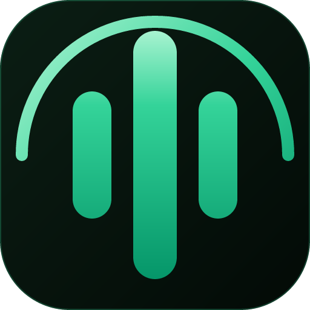

FewType简短版：FewType 免费、开源（MIT）、无订阅——你自己带 AI 密钥。下面是关于设置到隐私的完整解答。
关键事实，一张表讲清。
| 价格 | 免费，开源（MIT）。无订阅，无内购。 |
|---|---|
| 平台 | Windows 10 / 11（x64）。安装版或免安装 ZIP。 |
| AI 服务 | 自带密钥。内置 Groq（全球可用）、火山引擎 与 硅基流动（中国大陆用户常用），也支持自定义接口。 |
| 三大场景 | 语音打字（AI 文风与翻译）· 电子书朗读（浏览器扩展）· 长文本转语音。 |
| 电子书平台 | Google Play Books · Koodo Reader · 微信读书（weread.qq.com）。 |
| 语言 | 多语言语音输入与翻译；TTS 提供多种语言神经音色。界面支持简中、繁中、英文。 |
| 隐私 | 密钥与数据只保存在本地。无账号、无追踪、不记录原始录音。 |
| 开源协议 | MIT——代码、构建与路线图全部公开在 GitHub。 |